機械学習タグが付けられた新着記事 - Qiita
https://qiita.com/tags/機械学習
機械学習に関する情報が集まっています。現在16248件の記事があります。また9437人のユーザーが機械学習タグをフォローしています。
フィード
【技術解説】ビットコイン分析 Pythonライブラリで急変動を見逃すな！ボリンジャーバンドのスクイズ検知法
機械学習タグが付けられた新着記事 - Qiita
ビットコイン分析: Pythonライブラリによるボリンジャーバンドのスクイズ検知法本記事では、ビットコインのような高ボラティリティな資産の急激な価格変動を監視するために、ボリンジャーバンドのスクイズを用いた分析手法をPythonで実装する方法を解説します。このアプローチ...
3時間前
Kerasで学ぶ深層学習の定番書3選
機械学習タグが付けられた新着記事 - Qiita
はじめに数年前、画像分類の社内PoCを任されたとき、自分は転移学習のサンプルコードをほぼそのまま持ってきて動かした。学習は回る。精度は7割で止まる。そこから先、何を触ればいいのか見当がつかなかった。やったことは、学習率を半分にする、エポックを増やす、Dropoutを足...
5時間前
Pythonで学ぶ時系列予測 ― e-learningで基礎から実践まで Part 1
機械学習タグが付けられた新着記事 - Qiita
Pythonで学ぶ時系列予測 ― e-learningで基礎から実践まで Part 1はじめに雨量、水位、気温、交通量、電力需要、売上など、時間とともに変化するデータは身の回りに数多くあります。例えば、10分ごとの雨量であれば次のように記録されます。10:00...
15時間前
Databricks資格はどれから受ける？一番人気のDEAは入口じゃなかった
機械学習タグが付けられた新着記事 - Qiita
先に答えDatabricksの資格は7つあります。どれから受けるかは、いまやっている仕事で決めるのがいちばん失敗しません。あなたは最初に受けるものSQLは書ける。DatabricksはこれからData Analyst Associate（DAA）...
20時間前
CVスコアの前に、そのデータで比較できるか
機械学習タグが付けられた新着記事 - Qiita
30秒でいうと： 電池寿命の公開データを使い、未知の実験バッチに対するモデルの比較を試みました。しかし、短寿命のセルが一つのバッチに集中し、見落とし率を含む比較が成立しませんでした。数値を出すために分割を変えるのではなく、「この問いは、このデータでは判定できない」と記録し、その経験を次のデータ選びに生かしました。予測モデルを比較する前に、確かめたいこと機械学習では、特徴量を増やしたりモデルを変えたりして、交差検証（CV）のスコアを比べます。ただし、データをどう分割するかによっては、そもそも知りたいことを評価できない場合があります。私も、Seversonらの2019年論文で公開された電池寿命データを検討した際、この問題に行き当たりました。元論文の予測性能を再評価する話ではなく、評価できない問いを、評価できたことにしなかったという、私自身の検討の記録です。124セルのデータで起きたこと使ったのは、124個の電池セルについて寿命などが記録された公開データです。124個のセルは、3つの「バッチ」に分かれています。ここでいうバッチは、複数の電池をまとめて充放電試験した実験上のグループです。製造ロ
1日前
抖陰を題材に考える動画プラットフォームの技術設計：推薦アルゴリズムと快適な視聴体験の作り方
機械学習タグが付けられた新着記事 - Qiita
はじめにスマートフォンで動画を楽しむことが日常になった現在、動画プラットフォームに求められるものは、単に映像を再生できる機能だけではありません。利用者の興味に合ったコンテンツを見つけやすくする仕組み、快適な再生速度、直感的な操作画面、そして安心して利用できる環境が重要になっています。今回は「抖陰」という名称を題材に、現代の動画配信サービスに共通する技術的な課題を考えてみます。特定サービスの内部仕様を分析するものではなく、一般的な動画プラットフォームを設計する際に役立つ技術的な考え方を整理する記事です。一、動画プラットフォームを支える三つの技術動画サービスの使いやすさを左右する要素は、大きく三つに分けられます。第一に、利用者の興味を理解する推薦技術です。第二に、映像を安定して届ける配信技術です。第三に、利用者が迷わず操作できる画面設計です。これらは独立しているように見えますが、実際には密接に関係しています。例えば、推薦精度が高くても動画の読み込みが遅ければ、利用者は視聴を中断してしまいます。反対に再生が快適でも、興味のない動画ばかり表示されれば満足度は高まりません。そのため、サービス全体
1日前
【技術解説】オプション取引の自動化！Pythonとセンチメント分析で勝利を掴もう
機械学習タグが付けられた新着記事 - Qiita
オプション取引の自動化！Pythonとセンチメント分析で勝利を掴もうこの記事では、Pythonを使用してオプション取引を自動化し、センチメント分析を駆使する方法について解説します。特に、ニュースやSNSからのデータを分析し、市場のセンチメントを捉える手法に焦点を当てます。使用する主なライブラリは、yfinance、BeautifulSoup、TextBlob、およびccxtです。センチメント分析を活用したオプション取引の概要センチメント分析とは、テキストデータから感情や意見を抽出し、投資判断に活かす手法です。特に、ニュースやSNSの情報は株価に対する市場の心理を反映しています。この情報を利用してオプション市場の動向を予測し、取引の成功確率を向上させることが可能です。以下のフローで、センチメント分析とオプション取引の自動化を行います。ニュース・SNSデータのスクレイピングデータ収集の最初のステップとして、yfinanceライブラリを使用して株価データを取得し、BeautifulSoupを使ってSNSデータのスクレイピングを行います。以下は、特定の企業に関する最近のニュースを収集するコード
1日前
本番データを汚さないオンデマンド推論（sandbox）の設計 〜推論オーケストレータの責務分離と休眠LLMコスト上限の実効化〜
機械学習タグが付けられた新着記事 - Qiita
「この銘柄、AIならどう判断する？」をその場で試したい。でも、その気まぐれな1回が、本番の学習データを汚してはならない。日本株のAI銘柄スクリーニング＆継続学習端末「ALPHA FORGE（アルファフォージ）」を、Claude Code と二人三脚で個人開発しています。今回は【事件簿】回。好きな銘柄でAIの全思考プロセスをライブ観察できる「試し打ち（sandbox）」機能を安全に作り、実機で動かしたらいきなり却下の場面に遭遇したお話です🧪【要約：この記事で伝えたいこと】好きな銘柄で4分析から検証ゲートまでの全思考をライブで見たい。しかし興味本位の1回が予測台帳に混ざると、継続学習も実測勝率も狂ってしまう😨コードを調査し「推論本体は台帳に書かない」と確認したうえで、台帳を書かない専用入口（sandbox）を新設。眠っていた1日5ドルのLLM費用上限も実効化した💰持ち帰り：料金がかかる実機検証は実行直前に人間へ確認。ある大型株を試したら確度38%で見事に却下され、台帳件数（76件）が無傷のまま維持されたことをDBで確認した✨※本記事はnote連載［ALPHA FORGE 開発秘話 #18］
1日前
判断特化AI「Jev」を試す：文章やJSONを同じワークフローで評価する
機械学習タグが付けられた新着記事 - Qiita
はじめに文章やJSONから判断結果を作りたいとき、モデルの出力を同じ入力で比べられる環境があると検証しやすくなります。この記事では、Decisions API の Jev Model を題材に、判断モデルを試すときの観点を整理します。Decisions APIで試せることDecisions API は、ホストされた判断モデルを試すためのプレイグラウンドと共有APIを提供しています。Choice、Score、Noul という構造化された質問形式を、テキストまたはJSONに対して使えます。対応するモデルでは画像入力も扱えます。モデルを選ぶ前に、同じ例題を複数のモデルへ入力し、結果の傾向を確認します。例えば、次のような手順です。判断したい入力と期待する出力形式を定義するプレイグラウンドで同じ例題を比較する目的に合うモデルを選び、共有APIでアプリケーションから呼び出すJevを試すときの観点Jevを含むモデルを比べるときは、正解・不正解だけでなく、入力の表現を変えた場合の安定性や、判断理由を後から確認できる形になっているかも見ておくと便利です。小さな評価セットを作り、分類・スコアリング・Yes
2日前
EmbeddingGemma 2 を改良して、スマホで動く動画判定モデルReflex-2を開発
機械学習タグが付けられた新着記事 - Qiita
はじめに前回の記事では、Google の Gemma 4 E4B を土台に、frontier LLM の精度と Jev の速さを持つ 4B の判定モデル Reflex-1 を作りました。Reflex-1 が扱うのは、文章と画像です。今回はその続きとして、動画と音に取り組みました。見守りカメラに映った人が転んだ、防犯カメラに異常が映った、ガラスが割れる音がした。こうした現場で起きたことを、映像を外に出さずに、手元の機器でその場で判定できないか、という問いです。前回の記事の最後に、各企業が自分たちの目的に合ったモデルを自分で作り、運用できるようにしたい、と書きました。今回は、現場の映像や音をお手本にして、判定を数分で作れる形にしています。土台には、Google が 2026 年 10 月 6 日に公開したばかりの EmbeddingGemma 2 を使いました。課題見守りカメラの転倒、防犯カメラの異常、ガラスの割れる音などを AI で判定したいとします。Gemini などの frontier LLM は動画を読めますが、1 回の判定に数秒から十数秒かかり、映像をクラウドに送る必要があります
2日前
Jev とは何か。Jevもどき(Open Weight の代替 14 構成)を比較というか調査してみた。
機械学習タグが付けられた新着記事 - Qiita
Claude CodeでFable5.1に調べてもらった内容をもとにしているので参考程度で見てください。Jevのことは知りたい、クラウドAPIはセキュリティ的に微妙だしローカルでやりたいし…というモチベーションです。主に私が忘れないための備忘目的になります。2026 年 9 月に TypeSafe AI が公開した Jev は、「文章を生成しない AI モデル」として話題になりました。公開から 3 週間で Jev 互換の Open Weight モデルが数十種類登場し、独立ベンチマークも 2 つ立ち上がっています。この記事では、Jev が何をするものか、入力と出力、使い方を整理したうえで、Open Weight の代替モデルがどういう作りになっているかを 3 つの方式に分けて説明します。後半では、Jev 形式の共通サンプル 76 問を自作し、手元の RTX 4090 で 14 構成を動かした結果を載せます。情報は 2026 年 10 月 9 日時点のものです。各モデルの性能数値の多くは開発元の自己申告で、独立計測は Benchmark Heaven の JevBench と、手元で動か
2日前
【技術解説】Python数理ロジックと機械学習を用いた資産運用・資金管理アルゴリズムの実装ガイド
機械学習タグが付けられた新着記事 - Qiita
株価予測モデル作成におけるセンチメント分析の活用この記事では、株価の動きを予測するためにセンチメント分析を活用したモデルをPythonで実装する手順を解説します。具体的には、株価データの取得、センチメント分析、回帰分析を用いたモデルの構築と評価を行います。使用するライブラリは、yfinance、tweepy、TextBlob、pandas、scikit-learnです。センチメント分析とはセンチメント分析は、テキストデータから感情や意見を抽出する手法です。例えば、SNSやニュースから得られる情報が株価に与える影響を理解するために、ポジティブまたはネガティブな表現を分析します。これにより、投資家の心理や市場のトレンドを把握できるため、株価予測において非常に有用です。データ収集の準備まず、株価データとセンチメント分析に必要なデータを収集します。以下のコマンドを使用して、必要なライブラリをインストールします。pip install yfinance tweepy textblob次に、Pythonでデータを収集するためのコードを示します。import yfinance as yfimport
2日前
Apple Silicon向けLLM推論エンジンを開発して、MTPとメモリ帯域を検証した
機械学習タグが付けられた新着記事 - Qiita
Apple Silicon Mac上でローカルLLMを実行するためのオープンソース推論・サービングエンジン「ax-engine」を開発しています。この記事では、ax-engineを作った背景、設計方針、MTPによる高速化、mlx-lmとの比較、現時点での課題についてまとめます。この記事は自作OSSの技術的な開発記録です。実際のベンチマーク結果と、他のApple Silicon環境でのフィードバックを共有していただくことを目的にしています。ax-engineとはax-engineは、Apple Silicon Mac向けのLLM推論・モデルサービングエンジンです。チャットUIやクラウドAPIサービスではなく、ローカルでモデルを実行し、他のアプリケーションから利用できる推論ランタイムを目指しています。主な特徴は以下です。Apple Silicon向けのローカル推論OpenAI互換API1つのプロセスから複数モデルをサービング対応モデルでのMTP（Multi-Token Prediction）Prefix reuseローカル環境での推論既存のOpenAI API対応ツールとの接続GitHub
2日前
Python機械学習の実践書4選
機械学習タグが付けられた新着記事 - Qiita
はじめに数年前、自分は社内の需要予測モデルをひとりで抱えていた。検証データでのスコアは悪くない。それなのに本番に出すと予測が外れる。コードを何度見直してもバグはない。原因は交差検証の切り方で、時系列の未来の情報が学習側に漏れていた。この手の失敗は、ネットの断片的なチュートリアルでは見つけにくい。手順は書いてあっても、なぜその手順なのかは書かれていない。自分がつまずいていたのは実装の腕ではなく、その前提にある考え方だった。そこから機械学習の本をまとめて読み直した。読む順番を間違えるとかなり苦しい、というのが正直な感想である。最初に分厚い理論書を開けば挫折する。軽い入門書だけで止めれば、現場で起きる微妙な不具合の説明がつかない。この記事では、手を動かしながら読んで実際に効いた4冊を、読む順番つきで紹介する。全体像の地図、アルゴリズムの中身、PyTorchでの実装、最後に統計的な裏付けという流れだ。日本語で読めるものを優先した。① 機械学習 100＋ページ エッセンス — Andriy BurkovAmazonで見る著者のBurkovは機械学習の博士号を持ち、企業でデータサイエンスチームを率
2日前
クオンツ×AIの可能性を活かすために ― 限界を前提に「道具」として使う8つの心構え 1
1
機械学習タグが付けられた新着記事 - Qiita
本記事についてシステムトレードに取り組む筆者が、あくまで個人としての考えをまとめたものです。クオンツ×AIの可能性を否定する意図はなく、その可能性を活かし続けるための考え方として書いています。はじめにクオンツとAIの組み合わせによって、以前なら数週間かかっていた戦略の検証や実装が、今では数時間でできるようになりました。バックテスト基盤やAIエージェントを使った戦略研究のなかで、その恩恵を日々実感しています。個人がここまで高度な分析を扱えるようになったのは、大きな可能性です。一方で、「これだけの道具があれば勝てるはずだ」という感覚も生まれやすくなりました。問題はクオンツ×AIそのものではなく、それを万能だと思い込むことにあります。この思い込みこそが、大きな損失を招きうるリスクだと考えています。統計学者ジョージ・ボックスに、有名な言葉があります。モデルは現実そのものではない。だからこそ、限界を知ったうえで「役に立つ」使い方を探ることに意味がある。この言葉は、クオンツ×AIとの向き合い方をよく表していると思います。本記事では、限界を前提にクオンツ×AIを使いこなすための心構えを、一人の実践者
2日前
【文献メモ】DeepNet: 残差接続を定数倍し初期値を縮小して 1000 層の Post-LN Transformer を学習する (IEEE TPAMI 2024)
機械学習タグが付けられた新着記事 - Qiita
DeepNet: Scaling Transformers to 1,000 Layers [1] は、深い Post-LN Transformer の学習が不安定になるのは学習初期のモデル更新が大きすぎるためであることを示し、残差接続に定数 $\alpha > 1$ をかける DeepNorm と、一部の重みの初期値を $\beta < 1$ 倍する初期化を組み合わせた DeepNet を提案して、1000 層の Transformer の学習を可能にした論文です。Microsoft Research の Hongyu Wang らによって著されました。IEEE TPAMI に掲載されました (arXiv 版は 2022 年)。参考文献Hongyu Wang, Shuming Ma, Li Dong, Shaohan Huang, Dongdong Zhang, Furu Wei. DeepNet: Scaling Transformers to 1,000 Layers. IEEE Transactions on Pattern Analysis and Machine Intel
3日前

EC2 ではなく AWS Lambda MicroVMs 上の code-server で Strands Decider ハンズオンを完走した話 1
機械学習タグが付けられた新着記事 - Qiita
やったことと結論Amazon EC2（t4g.xlarge）向けに公開された「Strands Decider ハンズオン」を、AWS Lambda MicroVMs 上の自作 code-server 環境へ移植し、一連の演習ステップを完走しました。検証を通じて確認できた主な結果は次の 3 点です。最大 16 vCPU のバースト性能により、判定処理のレイテンシが EC2（4 vCPU）の約 3000〜5400 ms から 783〜1328 ms（約 1 秒）へ短縮されたこと約 8.4 GB のメモリを確保した推論サーバーを落とさず、suspend から resume することで、数秒でモデル再ロードなしに推論を再開できたこと通常利用（1.5 時間）では EC2（約 39 円）が MicroVM（約 114 円）より安価なものの、MicroVM には 8 時間の自動終了機能があるため、24 時間放置の消し忘れ時でも費用上限（約 606 円）が抑えられること数 GB のモデルを扱う一時的な検証環境として、数秒で起動し、状態を保持したまま停止できる Lambda MicroVMs は実用的な
3日前
【360回の測定】Gemma 4 E4Bの出力速度が最大2.19倍に。主要GPUカーネルは速くないのに、なぜ？MTPを試す2つの方法
機械学習タグが付けられた新着記事 - Qiita
LLMを速くするために、まずGPUを買い替えようとしているなら、この360回の測定を見てほしい。24GBのNVIDIA A10Gで、同じGemma 4を動かす。変えるのは、次のトークンを先読みする補助モデルを使うかどうかだ。先読みする候補は 2トークン。比較したのは文章生成・推論問題・ツール呼び出しの 3種類、計360リクエスト。9種類の全プロンプトで、出力スループットは 1.91〜2.19倍。それが、Suwesh Prasad Sahが9月28日に公開したGemma 4のMTP実測研究だ。MTPはMulti-Token Predictionの略である。驚くのは、その理由だ。代表的な主要GPUカーネルの所要時間は、通常生成が 2.78ms、MTPが 2.79ms。ここは速くなっていない。論文の要旨にも、こう書かれている。The dominant MTP GEMM kernel was not faster than the dominant autoregressive GEMV kernel1回の処理を速くしなくても、同じ処理を呼ぶ回数が減れば、生成は速くなる。結論から言うと1. 対
3日前
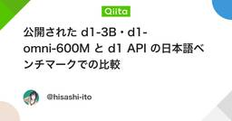
公開された d1-3B・d1-omni-600M と d1 API の日本語ベンチマークでの比較
機械学習タグが付けられた新着記事 - Qiita
Liquid AI が 10 月 5 日に、判断専用モデル d1 の系列から、重みを公開したモデル d1-3B と d1-omni-600M を Hugging Face に出しました。同社のブログの題は「Open d1: Edge decision models for text, vision, and audio」で、手元の機械や組み込み機器で動かす判断モデルとして位置づけています。d1-3B は 3.12B パラメータで、自社の視覚言語モデル LFM2.5-VL-3B から学習したものです。d1-omni-600M は 587M パラメータで、エンコーダの LFM2.5-Encoder-350M を土台に、画像と音声も読めるようにしたもので、モデルカードは開発中の試験版と書いています。本作業の大半を Claude Code で実行・文書化したものです。何を測るかの判断と、結果の読み取りは筆者が行いました。API の d1 より精度が低いことは、Liquid AI 自身が示しています。モデルカードの図「Decision Index against model size」では、横軸
3日前
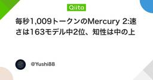
毎秒1,009トークンのMercury 2:速さは163モデル中2位、知性は中の上
機械学習タグが付けられた新着記事 - Qiita
独立系ベンチマークのArtificial Analysisでは、Mercury 2は速度で計測対象163モデル中2位に位置する。一方、知性の総合指標は22。全モデルの中央値が17なので、真ん中よりやや上——同サイトの区分でも「above average(平均をやや上回る)」止まりだ。米国のInception Labs(インセプション・ラボ)が2026年2月に公開した推論モデルMercury 2は、LLMの大前提だった「1トークンずつ左から右へ書く」手順を捨てて、この位置に着いた。LLMをAPIで一度でも叩いたことがあるなら、この偏った強さがどの工程に効くのかを考える材料になる。Mercury 2とは:タイプライターをやめ、下書きを何度も直すエディタになるMercury 2は、画像生成でおなじみの拡散モデルの仕組みをテキスト生成に持ち込んだ拡散LLM(diffusion LLM、dLLM)の一つだ。従来のLLMは、直前までのトークン列をもとに次の1トークンを左から右へ順に出す、自己回帰(autoregressive)という方式を採る。計算結果を使い回すKVキャッシュ(過去の文脈を覚えてお
3日前
【技術解説】金融データ 可視化 Python 手法で市場動向を読み解く！センチメント分析活用ガイド
機械学習タグが付けられた新着記事 - Qiita
金融データの可視化とセンチメント分析による市場動向の理解この記事では、Pythonを用いて金融データを可視化し、センチメント分析を活用して市場の動向を読み解く手法について解説します。具体的には、以下のライブラリを使用します。yfinance: 金融データの取得TextBlob: センチメント分析matplotlib: データの可視化ニュースとSNSから得られるセンチメントデータ金融市場では、ニュースやSNSの情報が市場心理を反映します。これらの情報を分析することで、株価や通貨の動向を予測するためのヒントを得ることが可能です。センチメント分析で主に活用される情報源には以下があります。ニュースサイトTwitterやRedditといったSNSブログやフォーラムこれらの情報源からデータを収集し、そのセンチメントを数値化することが目的です。必要なライブラリのインストールまずは、必要なライブラリをインストールします。以下のコマンドを実行してください。pip install yfinance textblob matplotlibセンチメント分析のアルゴリズムセンチメント分析は、主に以下のステップで
3日前
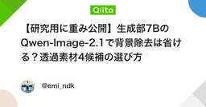
【研究用に重み公開】生成部7BのQwen-Image-2.1で背景除去は省ける？透過素材4候補の選び方
機械学習タグが付けられた新着記事 - Qiita
透過PNGを作る人は、Qwen-Image-2.1の「背景まで生成しなくていい」を見ておいてほしい。画像を生成して、背景を消して、髪や輪郭を直す。その工程を、最初から透明度を持つ画像の生成にまとめる選択肢が出てきた。Qwenが2026年9月20日に公開したQwen-Image-2.1は、画像生成部分が7B、約70億パラメータ。しかも、次の3つを同じモデルで扱う。RGBと透明度を持つRGBA画像を生成する。最大10枚の参照画像を使って編集する。テキストと参照画像の計算を、複数のノイズ除去ステップで再利用する。それが今回のQwen-Image-2.1だ。決定的なのは、公開VAE設定にあるこの2行である。"in_channels": 4,"out_channels": 4透明っぽい背景を描く話ではない。画像表現そのものに、4番目のチャンネルがある。ただし、ここで「商品写真の背景削除も全部これでいい」と飛びつくと、別の問題にぶつかる。欲しいのは、新しい絵なのか。それとも、元の写真の色を残した切り抜きなのか。結論から言うと1. 「新しく描く」「元のRGBを残す」「複数レイヤーに分ける」のどれかを
4日前
LLMが生成したSVGをPythonで自動採点する：cairosvg描画・静的チェック・再現できる記録
機械学習タグが付けられた新着記事 - Qiita
「自転車に乗るペリカンをSVGで描いて」というプロンプトでLLMを比べる遊びは、すっかり定番になりました。ただ、何十枚も集め始めると、すぐに「で、これは誰がどう採点するのか」という問題にぶつかります。目視は疲れるうえに日によって基準がぶれますし、総合点で「8点」とつけても、あとから理由を説明できません。この記事では、LLMが出力したSVGを機械的に、再現可能な形で採点するための最小パイプラインをPythonで組みます。応答からSVGを取り出し、形式・リソース制約を静的にチェックするcairosvgで固定条件のPNGに描画し、同じ入力から同じ画素が出ることを確かめる「DOMを数える」採点がなぜ危ういかを実際に確かめる部品IDを指定した課題で、足とペダルの距離を描画結果から測る判定を pass / fail / uncertain / not_applicable で記録し、集計時に未決を消さない先に限界を書いておくと、このパイプラインは「鳥が正しく自転車に乗っているか」という意味的な判定を自動化するものではありません。自動化するのは、根拠を示せる部分（形式・描画・幾何の補助測定）と記録で
4日前
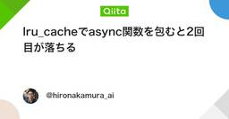
lru_cacheでasync関数を包むと2回目が落ちる
機械学習タグが付けられた新着記事 - Qiita
キャッシュを足したら、2回目だけ落ちた。今日、LLMの疑似呼び出しで検証した。lru_cacheを付けると、最初のawaitは通り、次で落ちる。ヒットしているのに使えないんだよね。自分はTaskを共有したい。同じ入力の並列2件を1回にまとめ、失敗後の再実行まで確認した。lru_cacheが保存するのは何かasync defを呼ぶとコルーチンが返り、awaitで実行結果を受け取る。lru_cacheは待機せず戻り値を保存するので、使い切ったコルーチンが残る。同梱のLib/functools.pyも確認した。Python版の実装も、関数の戻り値を保存していた。コルーチンとTask、名前だけだとどうにも混ざる。Pythonで再現し、Taskを共有するCPython 3.14.8で実行済み。async_cache_check.pyに保存し、python3 async_cache_check.pyで動く。追加パッケージ不要。外部LLMの料金や性能は測っていない。import asynciofrom collections import Counterfrom functools import l
4日前
【技術解説】アルゴリズム取引 実装チュートリアル: Prophetでトレンド分析を行い収益化する方法
機械学習タグが付けられた新着記事 - Qiita
アルゴリズム取引 実装チュートリアル: Prophetでトレンド分析を行う方法この記事では、PythonのライブラリであるProphetを利用した時系列データのトレンド分析に関する実装方法を解説します。Prophetは、Facebookが開発したライブラリで、特に金融市場のデータ解析に適しています。これにより、取引戦略の構築や市場動向の把握が容易になります。Prophetライブラリの基本まず、Prophetとその依存ライブラリをインストールします。次のコマンドを実行してください。!pip install yfinance pandas matplotlib fbprophet次に、Yahoo Financeから株価データを取得します。以下のコードは、Apple Inc.（AAPL）の株価データを1年間取得する例です。import yfinance as yfimport pandas as pd# AAPLの株価データを1年間取得ticker = 'AAPL'data = yf.download(ticker, start='2022-01-01', end='2023-01-01',
4日前
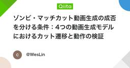
ゾンビ・マッチカット動画生成の成否を分ける条件：4つの動画生成モデルにおけるカット遷移と動作の検証
機械学習タグが付けられた新着記事 - Qiita
TikTok上で「would you still love me if I were a zombie」というキャプションとともに投稿されているゾンビ・マッチカット（動きを切らずに次のショットへつなぐ編集）の動画構成について、主要な動画生成モデルを用いて同一条件下での生成検証を行いました。本検証の目的は、映像編集ソフトウェアによる事後編集を行わず、1回の動画生成において2つの連続するシーンの動きを同期させたハードカットが意図通りに成立するかを確認することです。判定基準とビート構成ゾンビ・マッチカットは、1本の動画内で以下の5つのビートによって構成される一連の映像遷移です。廃小屋での対峙：雪に閉ざされた廃小屋の中で、人物がゾンビ化した愛する相手に向けてピストルを構えます。葛藤と銃の放棄：引き金を引くことができず、銃を床へ落として両腕を広げます。全速力の突進：ゾンビ化した人物が部屋の反対側から全速力で突進します。接触瞬間のハードカット：ゾンビの手や身体が相手に接触するまさにその瞬間に、ディゾルブやフェードを挟まず1フレームで画面を切り替えます。過去の回想と抱擁：突進の運動量をそのまま引き継
4日前
「過学習って何？」から理解する教師あり学習 — 正則化・交差検証・アンサンブルまで
機械学習タグが付けられた新着記事 - Qiita
機械学習の用語は、1つずつ暗記すると関係が見えにくくなりがちです。たとえば、過学習汎化正則化交差検証アンサンブル学習マルチタスク学習は、どれも教師あり学習の周辺でよく登場します。この記事では、これらを個別に覚えるのではなく、「学習したモデルを、未知のデータでもうまく使うにはどうすればよいか」という1本の流れとして整理します。教師あり学習とは教師あり学習（Supervised Learning）は、入力データと正解をセットにして、入力から正解を予測する規則を学習させる方法です。たとえば住宅の家賃を予測したい場合、次のようなデータを用意します。面積築年数駅からの距離家賃40㎡5年5分9万円60㎡10年10分11万円25㎡20年15分5万円ここでは「面積・築年数・駅からの距離」が入力で、「家賃」が正解です。モデルとは何か機械学習でいう モデル とは、入力を受け取り、そこから予測結果を出すための、学習済みの仕組みです。たとえば住宅価格予測なら、という働きをします。通常のプログラムでは、人間がルールを直接書きます。人間↓ルールを書く↓プログラム一方、機械学習では、データ↓学習アルゴリズム↓モデル
4日前
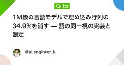
1M級の言語モデルで埋め込み行列の34.9%を消す — 語の同一視の実装と測定
機械学習タグが付けられた新着記事 - Qiita
個人で、1M級（パラメータ100万規模）の日本語言語モデルを「ノートPCに収まる大きさ」まで圧縮する研究をしています。CPUのみ、学習も推論も手元です。この記事は、3か月で試した100を超える構成のうち、最も明確に成功に近づいたパターンの実装と測定の記録です。TL;DR1M級の言語モデルでは、**埋め込み行列が全パラメータの71%**を占める。削るならここ。埋め込み行をコサイン類似度で同一視して代表行にまとめると、16,000行 → 10,423行（34.9%減）。語彙→代表行の写像は 28,000 B。それを払っても同じ品質でファイルが8.3%小さくなった。落とし穴：最適な閾値は、量子化だけ（PTQ）と再学習込み（QAT）で違う（0.94〜0.96 → 0.98）。語彙を32,000に倍増すると削減率は**54.9%**まで上がる。語彙が2倍でも代表行は1.385倍にしかならない。ノートPCのCPUだけで学習・評価しています。GPUは使っていません。なぜ埋め込みなのか対象は自作の小型言語モデル（d_model=144、4層、語彙16,000、tied embeddings）です。内訳
4日前
期待値プラスでも破産する？Kelly基準と機械学習モデルの確率校正
機械学習タグが付けられた新着記事 - Qiita
Kelly基準入門：確率予測・資金管理・モデル校正まで0. この記事の目的Kelly基準は、一言でいえば「勝てる可能性がある勝負に、資金の何割を投じるべきか」を決める考え方です。ただし、Kelly基準は単なる賭け金計算式ではありません。重要なのは、次の3点です。期待値がプラスでも、賭けすぎると長期的には破産に近づくことがある。Kelly基準は、資金の対数成長率を最大化する考え方である。機械学習モデルと組み合わせる場合、正解率よりも「確率の当たり具合」が重要である。この記事では、古典的なKelly基準から使い方、機械学習モデルとの接続、そして危険な落とし穴までを整理します。1. Kelly基準とは何かKelly基準は、1956年にJohn L. Kelly Jr.が発表した論文に由来します。もともとは通信理論の文脈で、「情報がどれだけ資金成長に役立つか」を説明するために提案されました。現在では、カジノ、スポーツベッティング、投資、ポートフォリオ最適化などで、「資金配分の基準」として語られます。Kelly基準の中心思想は、次のとおりです。1回ごとの利益額ではなく、長期的な資金の成長率を最大
4日前
Python機械学習の実務で効く5冊
機械学習タグが付けられた新着記事 - Qiita
はじめに数年前、自分は業務の片隅で需要予測のプロトタイプを任されたことがある。Qiitaやブログの記事をつまみ食いしながらscikit-learnを動かし、それなりの精度が出て満足していた。ところがレビューで「なぜこの前処理を入れたのか」「過学習していない根拠は何か」と聞かれて、何も答えられなかった。そこで気づいたのは、記事ベースの学習だと手順は増えるのに判断の軸が育たないということ。どのモデルを選ぶか、検証をどう設計するか、特徴量をどこまで作り込むか。この手の問いに答えるには、断片ではなく一本筋の通った説明が必要になる。機械学習の書籍は無数にあるが、日本語で読めて、コードと図が豊富で、しかも理論から逃げていないものに絞ると候補はぐっと減る。自分は結局、薄い本で全体像をつかみ、データ処理の土台を固め、実装書で手を動かし、理論書で深掘りする順番に落ち着いた。ここでは実際に手元で何度も開いた5冊を、その順番どおりに紹介する。網羅的なリストではなく、未経験から実務で説明責任を果たせるところまで持っていくための一本道として読んでほしい。① 機械学習 100+ページ エッセンス [The Hun
4日前
EmbeddingGemma 2の索引設計：モデル・前処理・次元をfingerprintで固定する
機械学習タグが付けられた新着記事 - Qiita
EmbeddingGemma 2を検索へ組み込むときは、保存するベクトルに「どのモデルと前処理で、どの実行条件から作ったか」を結び付けたい。同じ長さの数値配列でも、生成条件が違えば、そのまま比較してよいとは限らないからだ。この記事では、モデル・processor・runtime・dtype・次元・正規化・プロンプト方針をfingerprintへまとめ、取り込み側と検索側で一致を確認する小さな実装を示す。これは本記事の設計案であり、EmbeddingGemma 2の公式API仕様ではない。実行した範囲は、純Pythonで手入力した合成ベクトルの契約検査まで。 実モデルの取得・推論、日本語検索精度、Macの実RAMや速度は測定していない。公開された機能と、索引が持つ責任Googleは2026年10月7日01:00 JSTの公式発表で、EmbeddingGemma 2を公開した。テキスト・コード・画像・音声・動画を検索用ベクトルへ変換するモデルであり、このモデル単体が回答文章を生成するわけではない。公式発表、開発者ガイド公式カードの標準出力は768次元で、512・256・128次元への短縮を
4日前

EmbeddingGemma 2解説：マルチモーダル埋め込みをオンデバイスで動かす
機械学習タグが付けられた新着記事 - Qiita
はじめにGoogle が、オープンウェイトのマルチモーダル埋め込みモデル EmbeddingGemma 2 を公開しました。Google Developers Blog では、紹介記事と開発者ガイドの2本が出ています。最大 740M パラメータテキスト・コード・画像・動画・音声を 768次元の共通ベクトル空間にマッピングデータを外部に送らず、デバイス上で検索できるMatryoshka 表現学習（MRL）で、埋め込みを最小 128次元まで切り詰められる従来は、画像検索や音声検索のたびにクラウドの埋め込み API を呼ぶ構成が一般的でした。EmbeddingGemma 2 を使えば、これをエッジ側で完結させる設計が現実的になります。📌 影響を受ける人モバイルアプリや組み込み機器で、メディア検索や RAG を実装している人個人情報を含む写真・音声・動画を、クラウドに送りたくない人ベクトル DB のストレージコストを下げたい人既存のものが壊れる変更ではありません。action_required は false で、新しい選択肢が増えたという位置づけです。変更の全体像統合方法は、目的別に3つあり
4日前
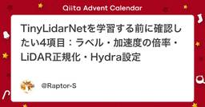
TinyLidarNetを学習する前に確認したい4項目：ラベル・加速度の倍率・LiDAR正規化・Hydra設定
機械学習タグが付けられた新着記事 - Qiita
TinyLidarNetの学習を始める前に、まずラベルと入出力の単位を確かめると、学習をやり直す回数を減らせます。私は自動運転AIチャレンジ2026のEnd to End AI部門で、この小さなLiDARモデルを使って決勝戦2位になりました。その途中で踏んだ問題を、次の参加者が確認できる手順にします。この記事でできること学習データのラベルが、出力層の範囲に収まるか調べる加速度の正側・負側の倍率を、学習と推論でそろえるLiDARの実際のレンジと、前処理の正規化を区別するHydraの上書きが、学習で読むキーに届いているか確かめる最新版では、私が出したPR #362が2026年10月2日にマージされ、共通の設定ファイルと加速度の倍率が追加されています。「コードに倍率を足す」旧版の対処と、「設定を確認する」現在の対処を分けて説明します。決勝で使ったモデルを手元のAWSIMで走らせた記録です。大会本番のレースではありません。モデルの外には減速・復帰のルールも置いています。この記事は、公式リポジトリの dev、コミット 50d6f65038b7ebd41620c442c25cfedcc1b3c7a
5日前
機械学習力場はどこで外れるのか? Graphene/Ni(111)でMACE-MPをDFTと比較してみた
機械学習タグが付けられた新着記事 - Qiita
TL;DRNi(111)上のグラフェンの構造と付着仕事を、高速な機械学習ティア(数分)と高精度なDFTティアの2段階で再現しました。高速ティアはスクリーニングには有用ですが、この界面では文献値を再現できません。そのずれこそが興味深い点です。すべてMat3raプラットフォーム上のノートブックから実行でき、無料で試せます。なぜこの界面なのかNi(111)上のグラフェンは単純に見えますが、結果は炭素原子がどこに位置するかに左右されます。fcc、hcp、ホロー、ブリッジの4つの候補配置(レジストリ)で、結合の強さは大きく変わります。総説(Dahal・Batzill, Nanoscale, 2014)とLahiriらの計算(New J. Phys., 2011)が、fcc、hcp、ホローの基準値を与えています。ブリッジは両論文で定量化されていないため、追加の点として加えました。各配置について、ノートブックは次の2つの量を取り出します。グラフェン–金属間の距離付着仕事(work of adhesion) W = (E_graphene + E_Ni − E_interface) / A(Aは界面の
5日前
質問からテーブル名へ：誰もが LLM に頼る場面で、小さな意思決定モデルを試してみた
機械学習タグが付けられた新着記事 - Qiita
この記事は筆者のブログ LynxLine からの転載です。英語版は こちら。自由形式のユーザーの質問を、約 1,000 個あるデータベースのテーブル名のどれか 1 つに対応付ける必要がありました。しかも高速に、自前のハードウェアで。そこで、オープンソースの「System-1 意思決定モデル」である Laya を一通り試しました。ゼロショット、ハイブリッド検索との組み合わせ、そして最後に合成データでのファインチューニング。何がうまくいき、何が気づかないうちに失敗していたのか、そして次にやるならどうするかをまとめます。課題私たちのデータ基盤には、論理テーブルがおよそ 1,000 個あります。ユーザーは 「1 月の店舗ごとの日次売上合計を、日別に出して」 のような質問をします。SQL を生成するより手前のどこかで、この質問が XQR7_DTV_AGG に関するものであって、同じく店舗や日付や合計に触れている他の 40 個のテーブルではない、と判断する必要があります。大きな LLM ならこれをうまくこなしますが、私たちはこの判定を安価なローカルの部品にしたいと考えていました。ユーザーの発話ごと
5日前
AIが急に賢くなった正体は「巨大化」だけじゃなかった！ 性能を上げる5つの仕組みをたとえ話で理解しよう
機械学習タグが付けられた新着記事 - Qiita
AIの性能向上は5つの方向で説明できる最近のAIは、数年前と比べて別物のように賢くなりました。コードを書く、長い資料の分析、数学の問題を解く。そうした場面で、その差を実感している人も多いはずです。では、その性能はどうやって上げているのでしょうか。結論から言うと、単に「モデルを大きくしている」だけではありません。現代のAIシステムの性能向上は、大きく5つの方向から説明できます。ただし、この5つは同じ階層の話ではありません。1から3は、モデルの能力を伸ばす学習・推論の工夫です。4は、モデルの構造と効率化の話です。5は、モデルを含むシステム全体の設計の話です。#仕組みイメージキーワード分類1大量に読ませて土台をつくる図書館の本を片っ端から読む事前学習、スケーリング則学習2人間の評価で仕上げる家庭教師に添削してもらうRLHF学習3自動採点のドリルで鍛え、考える時間を増やす答え合わせ付きの問題集と、見直しの時間RLVR、推論時スケーリング学習・推論4計算量を抑えて大きくする担当制の専門家チームと、先生から教わる生徒MoE、蒸留構造・効率化5道具と記憶を持たせる整理された机と辞書エージェント、コン
5日前
「抖陰」から考える動画サービスの推薦設計――なぜ次の一本を見たくなるのか
機械学習タグが付けられた新着記事 - Qiita
動画サービスを使っていると、ときどき不思議に感じることがあります。最初は一つの動画を見るだけのつもりだったのに、気付けば次の動画、その次の動画へと進んでいる。これは単純に動画の本数が多いからではありません。サービス側が利用者の行動を理解し、興味に近い情報を適切な順番で提示しているからです。今回は「抖陰」という動画サービスを題材として、動画プラットフォームにおける推薦機能や画面設計について考えてみます。動画サービスで重要なのは「探させない」こと従来型の動画サイトでは、利用者が検索欄に文字を入力し、一覧から目的の動画を選択する方法が一般的でした。しかし現在の動画サービスでは、「利用者自身が探す」という操作をできるだけ減らす設計が重要になっています。利用者が動画を再生した時間、途中で離脱した位置、同じ種類の動画を続けて見た回数など、さまざまな行動を手掛かりとして次に表示する内容を決定できます。たとえば、短い動画を最後まで見る利用者には、同程度の長さの動画を優先することが考えられます。反対に、長い動画を頻繁に最後まで視聴する利用者には、内容をじっくり楽しめる作品を推薦する方が自然です。つまり重
5日前
RAGのRecall@3、重複チャンクで150％の誤集計
機械学習タグが付けられた新着記事 - Qiita
Recall@3が1.50になった。今日、同じ文書のIDを3回並べた最小ケースをPythonで作っていて、正解文書を拾うたびに加算するコードが、150％を返した。RAGの検索器を比べる前に、評価コードの重複カウントを潰したい。チャンクを細かくしただけで成績が上がる集計を使うと、改善の方向まで間違えるんだよね。Recall@3の分子と分母を文書にそろえる今回は、検索結果を元の文書IDへ変換して評価する。正解は manual と faq の2文書。検索結果は順位順に manual, manual, manual, faq, terms とする。先頭3件は、同じマニュアルから切り出した別チャンクという想定だ。ここで測る文書単位のRecallは「正解文書のうち、上位kチャンクに何文書含まれるか」。上位k件に含まれる正解文書IDの種類数 ÷ 正解文書IDの種類数で計算する。先頭3件に正解のIDが3回あるから、素朴な加算では3÷2で1.50。実際に見つかった正解文書は manual だけなので、文書単位なら1÷2で0.50になる。manual の3チャンクがどれほど有用かは、まだ測っていない。Py
5日前
【技術解説】データサイエンスと投資戦略を駆使したボリンジャーバンドのスクイズ検知！Python実装ガイド
機械学習タグが付けられた新着記事 - Qiita
ボリンジャーバンドのスクイズ検知とPython実装ガイド本記事では、株式市場や仮想通貨市場におけるボリンジャーバンドを利用したスクイズ検知の手法を解説します。ボリンジャーバンドは、価格の変動幅を視覚的に把握するためのテクニカル指標であり、その特性を活用することで市場の動向を予測できます。Pythonのyfinanceライブラリを用いて実装を行い、スクイズ状態の検知からチャートの描画までの流れを説明します。ボリンジャーバンドの基本理解ボリンジャーバンドは以下の3つの要素から構成されます。中心線: N期間の単純移動平均 (SMA)上バンド: SMA + (標準偏差 × K)下バンド: SMA - (標準偏差 × K)通常、Kは2に設定されます。この指標を使用することで、価格が標準偏差の範囲内でどのように動いているかを把握できます。スクイズ検知の重要性スクイズは、価格帯が狭くなり、その後の急激な価格変動が発生する可能性を示す現象です。ボリンジャーバンドを使用することで、この状態を視覚的に捉え、潜在的な価格のブレイクアウトを予測することが可能です。Pythonでの実装以下に、ボリンジャーバンド
5日前
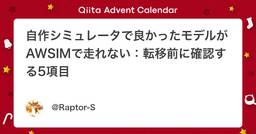
自作シミュレータで良かったモデルがAWSIMで走れない：転移前に確認する5項目
機械学習タグが付けられた新着記事 - Qiita
この記事でできること学習用シミュレータから別のシミュレータへ移す前に、出力の単位・車の応答・センサー・相手の動き・CPU負荷を順に点検できます。各比較のモデル、台数、試行回数を併記し、1本の成績を一般化しないようにしています。自動運転AIチャレンジ2026 の End to End AI 部門で、私（高専生1人のチーム KSK）は 2D LiDAR だけで舵を決めるモデルを自作の GPU シミュレータで学習させ、決勝戦で2位（準優勝）になりました。この記事は、その途中でいちばん時間を取られた「自作シミュレータと本番シミュレータの差」の記録です。この記事の要点自作 GPU シムで当時最高の成績（検証コースで 45 秒間ぶつからなかった割合 90.2%）を出した中間版モデルが、本番シミュレータ AWSIM の4台6周では4台とも完走できませんでした（4台とも3〜4周で制限 300 秒の時間切れ、罰 23 件・計 203.1 秒、1本）。自作シムで 83.6% だった別の版は、同じ条件の1本で 3/4 完走でした。差の出どころは5つありました。舵の倍率：同じ重みで1周 93 秒 → 43 秒
6日前
「モデルが劣化した」は本当か？ペリカンテストを数十回回して分かったこと
機械学習タグが付けられた新着記事 - Qiita
開示： 私は記事の後半で触れている Folkbench の開発に関わっています。使い古された話題なのに、いまだにきちんと決着がついていない問題についてずっと考えています。よく「このモデル、最近バカになった」「また劣化した」と言いますが、そのうちどこまでが本当で、どこからが単発サンプリングによる錯覚なのでしょうか。最近、周りでモデルに「ペリカンテスト」（自転車に乗るペリカンをSVGで描かせるやつ）をやらせる人が増えています。このテストは確かにえげつなくて、コードを書く力だけでなく空間的な位置関係も問われます。くちばしとハンドル、足とペダル、フレームと車輪――空間理解が少しでも甘いと、出てくる絵はかなり抽象的になります。ただ、数十回回してみて気づいたのは、ペリカンテストの最大の落とし穴は「1回の出力の良し悪しで判断すること」だという点です。LLMはそもそもランダム性をもった確率的サンプラーです。同じPromptでも、ある回は空間認識が冴えわたってフレームもクランクも足の位置も完璧、時間を変えてもう一度回すと突然ポストモダンな抽象画になる、ということが普通に起きます。Aの経路で20回中16回
6日前
Jev, d1, Laya などのベンチマーク一覧
機械学習タグが付けられた新着記事 - Qiita
Jev や d1 のような「判断専用」のモデルは、API を呼んで使うものがほとんどです。その中で Laya（Apache-2.0 で公開された、Jev 互換の API サーバーまで付いたエンジン）だけは、重みを手元に置き、完全にローカルで動かせます。ただし Laya の土台は BERT 系のモデルなので、ローカルで動かせる点は BERT と同じで、BERT と同じく、使うには微調整が必要になるのではないかという疑いがあります。そこで、同じ日本語のベンチマークを同じ条件で測り、既存のモデルと横に並べて、どこまで機能するかを調べました。本作業の大半を Claude Code で実行・文書化したものです。何を測るかの判断と、結果の読み取りは筆者が行いました。結論を先に書くと、微調整をしない Laya の日本語の正解率は、ほかのモデルより大きく下です。ただし、ローカルで動かした応答は 10 ミリ秒台で、API の 1/10 以下でした。測ったものベンチ内容件数偶然の正解率JNLI2 つの文の関係（含意・矛盾・中立）を選ぶ50033%JCommonsenseQA常識を問う 5 択50020%ラ
6日前
【技術解説】金融データ取得 API Pythonでセンチメント分析を実現！実践ガイド
機械学習タグが付けられた新着記事 - Qiita
金融データ取得 APIを用いたセンチメント分析の実践ガイド金融市場の動向を把握するためには、データ分析が不可欠です。数値データの追跡だけでなく、ニュースやSNSのセンチメント分析も重要な要素です。本記事では、Pythonを用いて金融データを取得し、センチメント分析を実施する方法を解説します。使用するライブラリyfinance: Yahoo Financeから株価データを取得するためのライブラリrequests: Web APIからデータを取得するためのライブラリtextblob: 自然言語処理を用いてセンチメント分析を行うライブラリpandas: データ操作を行うためのライブラリmatplotlib と seaborn: データの可視化に使用金融データの取得とセンチメント分析の流れ以下の流れで分析を進めます。金融データの取得データクリーニングニュース/SNSデータの取得センチメント分析分析結果の可視化投資判断yfinanceを使った株価データの取得yfinanceを使用して特定企業の株価データを取得する例を示します。ここではApple Inc.を対象とします。pip install y
6日前
ローカルLLMを使う 第1回：仕組みを知る――モデルファイル・学習・多言語とメモリ
機械学習タグが付けられた新着記事 - Qiita
LLMを自分のパソコンで動かそうとすると、いくつもの疑問が出てきます。「実行プログラムとモデルファイルは別なのか」「日本語で知識を教えたら英語でも使えるのか」「対応言語が多いほどメモリを使うのか」「後からタイ語を使いたくなったら何を足すのか」。さらに、LLM自体がどのように作られるのかを考えると、「毎回ゼロから開発するのか」「学習データは秘伝のタレのように改良されるのか」という疑問につながります。この記事では、これらを順番に整理します。対象は、主に文章を生成する一般的なLLMです。製品やモデルによって構成は異なるため、特定のソフトの導入手順ではなく、仕組みを理解するための説明とします。1. LLMとは何かLLMは、Large Language Model（大規模言語モデル） の略です。「Large」は対応言語の多さではなく、モデルの規模を指します。多言語であることはLLMの定義ではありません。特定の言語を中心に学習したLLMもあります。言語モデルとは、文章中の言葉の並びを学習し、その文脈でどのような言葉が続くかを扱うモデルです。文章生成に使うLLMでは、入力された文章に続くトークンを順
6日前
AIが数学でつまずくのは計算ミスより『解き方の糸口』が見つからないから
機械学習タグが付けられた新着記事 - Qiita
数学を解くAIは、年々賢くなっている。でも難しい問題で間違えるとき、その主な原因は計算ミスではなかった。「どう解くかの糸口を、自分で思いつけない」ことだった。原因の場所が分かれば、AIにうまく解かせるコツも見えてくる。今回はその最新研究を読み解く。目次正解率では見えなかった「つまずく場所」答えを見れば分かるのに、自分では気づけない糸口を一言渡すと、正解がぐっと増える正解率では見えなかった「つまずく場所」これまでAIの数学力は、「最後の答えが合っていたか」で測ってきた。合否しか分からないので、途中のどこで転んだのかは見えない。研究チームは、解く流れを4つの段階に分けた。問題からカギを見つける段階。ふつうに通しで解く段階。正解の解き方を見てカギを言い当てる段階。カギをもらってから解く段階。この4つだ。ここでいうカギとは、その問題が解ける理由になる核心のひらめきを指す。論文では数学プリミティブと呼ぶ。ある定理が使える条件に気づく、見方を変える、といったものだ。計算そのものではない。段階に分けて12個のモデル(GPT・Qwen・DeepSeekなど)を調べると、意外な結果が出た。AIが解けなか
6日前
機械学習の理論と実装を埋める3冊
機械学習タグが付けられた新着記事 - Qiita
はじめに数年前、自分は業務で需要予測のモデルを回していた。精度はそれなりに出ていたし、ダッシュボードにもきれいなグラフが並んだ。ところがレビューで「この特徴量、なんで効いてるの」と聞かれて何も答えられなかった。コードは書けていた。中で何が起きているかは、ほとんど説明できなかった。そこからしばらく、ライブラリのドキュメントを読み漁る日々が続いた。使い方はわかる。けれど正則化を強めるとなぜ汎化するのか、交差検証の分割を変えると結果がぶれる理由はどこにあるのか、そういう問いには届かない。手を動かした量と理解の深さは、残念ながら比例しない。結局効いたのは紙の本だった。薄い本で全体の地図を手に入れ、厚い本で数式に潜り、実装書でコードに戻る。この順で一周したとき、ようやく自分の言葉でモデルの挙動を語れるようになった。ここで挙げるのは3冊だけだ。どれも日本語で読めて、手元に置いて何度も開ける。役割がはっきり分かれているので内容の重複が少なく、積ん読になりにくいのも選んだ理由である。① 機械学習 100+ページ エッセンス — Andriy BurkovAmazonで見る著者のBurkovは人工知能の
6日前

AWS AI Practitioner超入門 #3: 機械学習・責任あるAI
機械学習タグが付けられた新着記事 - Qiita
はじめにこの記事は、前回の記事の続きです。今回は、機械学習の学習方法や評価指標、責任あるAIの考え方と、それらに対応するAWSサービスを取り上げます。想定読者AI活用に興味がある非エンジニアの方（ビジネスアナリスト、プロダクトマネージャーなど）AWS Certified AI Practitionerに興味はあるが、少しハードルが高いと感じている方機械学習や責任あるAIの用語にまだ自信がない方この記事のゴール機械学習の学習方法や、モデルの性能を評価する基本的な指標を知る責任あるAIの考え方と、AIを利用する際の主なリスクを知るそれらに対応するAWSサービスを知り、参考書や問題集に取り組む前のハードルを下げる目次はじめに想定読者この記事のゴール機械学習機械学習の分類教師あり学習教師なし学習強化学習機械学習の基本用語機械学習のライフサイクル機械学習の評価分類回帰機械学習の関連AWSサービスAmazon SageMaker AISageMaker AIの推論Amazon SageMaker JumpStart責任あるAIバイアス説明可能性機械学習における責任あるAI過学習と未学習責任あるAI
6日前
複合離散行動空間をどう設計するか - 並列方策・自己回帰方策・逐次実行の比較
機械学習タグが付けられた新着記事 - Qiita
はじめに最近、Kaggle の2人対戦型農業シミュレーションコンペ「Kaggriculture」に参加しました。このコンペでは、1回の意思決定で複数のキャラクターへの指示や、複数の取引注文をまとめて出力します。このコンペを攻略するにあたり、さまざまな施策を行いましたが、その中でも苦労したのが方策ネットワークの設計です。強化学習の知見がまだ少なく、行動の表現方法で考えることが多くありました。例えば、すべての行動の組み合わせを列挙すると行動空間が巨大になります。行動を複数の出力へ分解すれば計算しやすくなりますが、今度は出力同士の依存関係を表現できません。前の出力を条件にして一つずつ生成すれば依存関係を扱えますが、大量の rollout を必要とする強化学習では推論速度が問題になります。コンペ中は、この表現力と計算量の間でかなり悩みました。本記事では、その過程で検討した施策と調べた内容をもとに、複数のサブアクションからなる離散行動空間の設計方法を整理したいと思います。本文で扱うのは農業ゲーム固有の話ではありません。複数ロボットへの指示、設備へのタスク割り当て、共通予算を使う注文、ゲーム内の複
7日前

結局、Looped Transformerってなんや？ 23
機械学習タグが付けられた新着記事 - Qiita
何かと最近見かける Looped Transformer。仕組み自体はかなり単純です。しかし、論文を追ってみると「同じTransformerを何回も使う」だけでは終わりません。少なくとも僕は、名前だけ見てTransformerの同じ層を何回か通すやつでしょくらいで止まっていました。そこで今回は、なぜ同じTransformerを繰り返すのか理論的には何がうれしいのかRNNとは何が違うのかなぜ最近また注目されているのか何がまだ難しいのかを、最近の論文まで含めて整理します。対象は、Transformerの基本構造を知っている人です。そもそもLooped Transformerとは同じTransformer blockをdepth方向に繰り返し使うTransformerです。普通のTransformerを4層とすると、です。各層は異なるparameterを持ちます。数式ではh_{l+1}=F_{\theta_l}(h_l)です。一方、Looped Transformerでは同じblockを繰り返します。つまり、h_{t+1}=F_{\theta}(h_t)です。違いはこれだけです。ただし、この
7日前
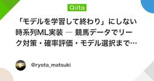
「モデルを学習して終わり」にしない時系列ML実装 ― 競馬データでリーク対策・確率評価・モデル選択まで作ってみた
機械学習タグが付けられた新着記事 - Qiita
はじめに機械学習を学び、モデルを動かせるようになると、用意されたデータセットから一歩進んで、まだ結果の分からない未来を予測してみたくなりました。そこで題材に選んだのが競馬です。今回予測するのは、各出走馬が3着以内に入る確率 P(top3) です。競馬には個体ごとの過去成績があり、レースごとに対戦相手や距離、競馬場などの条件が変わります。レース前に予測を出し、終了後には実際の結果を確認できるため、時系列データを「未来の予測」まで持っていく題材として適していると考えました。最初は、過去成績から特徴量を作り、XGBoostなどを学習すれば形になると思っていました。しかし実際に作り始めると、モデルそのものより、その周辺で考えるべきことが多くありました。過去成績は、どの時点まで使ってよいのか学習・検証・テストをどう時間で分けるのか少ない過去成績を、そのまま率にしてよいのか「強い馬」ではなく「今回の相手の中で強い馬」をどう表すのか確率予測をAccuracy以外でどう評価するのか新しいモデルが少しだけ良かったとき、本当に入れ替えるのか本番予測では、モデルと最新データのどちらを固定するのかWebで取得
7日前
【技術解説】LSTMによる資産管理の可視化！Pythonで未来の投資を予測する方法
機械学習タグが付けられた新着記事 - Qiita
LSTMによる資産管理の可視化と投資予測この記事では、Pythonを使用したLSTM（Long Short-Term Memory）を活用した時系列予測の手法について解説します。LSTMは特に金融データ予測において効果的であり、資産管理におけるデータの可視化をサポートします。使用するライブラリは、yfinance（Yahoo Finance API）、keras（深層学習ライブラリ）、pandas、numpy、matplotlibです。LSTMとはLSTMはリカレントニューラルネットワーク（RNN）の一種で、特に長期的な依存関係を考慮できるため、時系列データの予測に適しています。金融データのように季節性やトレンドが存在する場合でも、効果的に学習を行うことができます。必要なライブラリのインストールプロジェクトに必要なライブラリをインストールします。以下のコマンドを実行してください。pip install yfinance keras pandas numpy matplotlibデータ取得と前処理yfinanceを使用して過去の株価データを取得し、LSTMモデルに適した形式に変換します。
7日前
GPUもPythonも使わず、CPUだけでAIを動かす小さなRust製エンジンRai
機械学習タグが付けられた新着記事 - Qiita
普通のパソコンでAIを動かすのは、意外とハードルが高い。たいていはGPU(計算が得意な高価な部品)や、PyTorchなどの大きな準備がいるからだ。そこへ「GPUもいらない、Pythonもいらない」と言い切る小さな道具が現れた。名前はRai。計算の中身まで全部をRust(プログラミング言語の一つ)で手書きし、外部の大きな部品を一つも借りない。ひとことで言うと、Raiは「普通のパソコンのCPU(頭脳にあたる計算部品)だけでAIの言語モデルを動かす、小さくて中身を読める実行エンジン」だ。目次なぜ普通のパソコンでAIは重いのかRaiのやり方は「全部自分で書く」どこまで動く？試すにはなぜ普通のパソコンでAIは重いのか 🧩AIの言語モデルの正体は、巨大なかけ算の固まりだ。このかけ算を速くこなすため、多くのツールはGPUや、PyTorchなどの既製の部品を何層も重ねる。便利だが代償もある。インストールが重く、動かすまでの準備が長い。中で何が起きているかは、部品が多すぎて追いにくい。CPUだけで動かす工夫は前からある。有名なのはllama.cppだ。ただ、それも外部の計算ライブラリを少し借りている。R
7日前
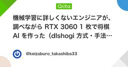
機械学習に詳しくないエンジニアが、調べながら RTX 3060 1 枚で将棋 AI を作った（dlshogi 方式・手法とコードを全部公開）
機械学習タグが付けられた新着記事 - Qiita
こんにちは、高柴です。ふだんは業務システムを作っているソフトウェアエンジニアです。機械学習は、正直に言うと専門ではありません。大学で研究していたわけでもないし、仕事で使っているわけでもない。それでも「将棋 AI って、個人でどこまで作れるんだろう」と気になって、調べながら作ってみました。使ったのは家にある RTX 3060 が 1 枚だけです。結果から書くと、こうなりました。強い AI と同じ手を選ぶ割合（指し手の一致率）が 52.3%改良版が最初の版に 31 勝 9 敗探索を速くしたら、1 秒に読める局面が約 1,450 → 約 5,500〜7,000 に増えて、同じネットどうしで 18 勝 2 敗この記事では、何を調べてどう作ったのかを、コードも含めて全部書きます。コードは GitHub に置いてあります（将棋は backend/rl/shogi/）。開発は AI（Claude Code）と相談しながら進めました。どの方式にするか、ネットの大きさをどうするか、過学習をどう直すか、といった設計の判断を AI とやり取りしながら決めて、実装も一緒に進めています。そのうえで、出てきた結果
7日前
Python(PyTorch)×ArduinoでEnd-to-End自動運転ミニカーを作る【コード全公開】
機械学習タグが付けられた新着記事 - Qiita
はじめにカメラ画像から操作を直接推論する End-to-End（E2E）の自動運転 を、手のひらサイズのミニカーで再現しました。人間がキーボードで操縦して「画像と操作のペア」を集める（Behavioral Cloning）PyTorchでCNNを学習させる推論結果をBluetoothでArduinoに送り、モーターを動かすArduino側に、AIとは独立したフェールセーフを2つ持たせるこの記事では、そのまま動かせるコード一式 と、組んでみてわかった技術的な注意点をまとめます。実車の開発現場との比較や、作ってみて感じたことは、ブログに書いています。Python×ArduinoでEnd-to-End自動運転ミニカーを作る（ブログ）動作の様子システム構成重いAI処理を行う上位のPCと、モーターを制御する下位のマイコンを分けています。実車の「SoC（AI処理）」と「MCU（車両制御）」の分離をまねた構成です。スマホカメラ ──Wi-Fi(IP Webcam)──▶ PC（Python / PyTorch） │ F / L / R / S の1文字 ▼ Bluetooth（HC-05） Ardu
8日前
Claude × Gemini × 4大MLモデルが自律連携する日本株検証基盤の設計図 ― 3Dシミュレーションで可視化する「推論・検証・継続学習」ループ
機械学習タグが付けられた新着記事 - Qiita
静止画のアーキテクチャ図では、システムが「どう動いているか」の時間軸までは見えません。個人開発で日本株のデータ検証基盤「ALPHA FORGE」を運用する中で痛感したのは、推論システムの真の難しさは「朝の予測」ではなく、「夜間の継続学習とモデルの世代交代」にあるという点です。複数の機械学習モデルとLLMがどのように役割分担し、市場データを受け取り、自己進化していくのか。その一連の流れをより直感的に把握するため、Three.js を用いてブラウザ上でリアルタイムに動く 3Dシミュレーション を構築しました。要約10枚の静止画図解では見えにくかった「データ流入 ➔ 4大MLモデル並行推論 ➔ Claudeによる3値策定・リスク審査 ➔ 夜間の継続学習・昇格」の自律連携を3Dアニメーション動画化Gemini（生テキストの隔離センチメント解析）、地表の4大モデル（XGBoost/RF/LSTM/Transformer）、Claude（プロンプト隔離＆数理審査・昇格承認）による堅牢な三層防御アーキテクチャ予測台帳のイミュータブル記録、等調回帰（Isotonic Regression）によるAIの
8日前
Amazonが無料で公開したJEV的な「Strands Decider」を試す。
機械学習タグが付けられた新着記事 - Qiita
問い合わせを「請求」「営業」「技術サポート」に振り分けたい。必要なのは、用意した候補から一つ選ぶことです。こうした分類を試せるのが、Strands Deciderです。自由な文章を生成する代わりに、選択肢の判定や尺度に沿った評価を返します。問い合わせの担当部署を決めたり、緊急性を調べたりする用途が想定されています。この記事では、Apple silicon搭載MacでPythonの仮想環境を作り、CLIとローカルHTTP APIから問い合わせを判定する手順を紹介します。JEVとの比較Strands Decider（Amazon / AWS公開）とJev（TypeSafe提供）は、いずれも自律型AIエージェントのワークフローにおいて「自由文の生成」ではなく「候補肢の選択やスコアリング（判断）」に特化したDecision Model（判断専用モデル）です。使うときの大きな違いは、モデルを自分の環境で動かすか、提供されているAPIを呼び出すかです。提供形態と運用の違い項目Strands Decider (2B)Jev (TypeSafe)開発元Amazon / AWS (Strands Age
8日前
PyTorchの `Linear` 層はCPU・GPU・FPGA・ASICの中で何になるのか？
機械学習タグが付けられた新着記事 - Qiita
はじめに機械学習では、こんなコードを何気なく書きます。import torchimport torch.nn as nnlayer = nn.Linear(784, 256)たった1行です。しかしハードウェアの視点から見ると、この1行はかなり面白いものです。同じ nn.Linear(784, 256) でも、CPUGPUFPGAASICでは、実際の実装が大きく異なります。では、PyTorchで書いた1層のLinearは、最終的にハードウェアの中で何になるのか？を追ってみます。1. nn.Linear(784, 256) は何をしているのかPyTorchのLinear層は、数学的には$$\mathbf{y} =\mathbf{x}W^T+\mathbf{b}$$を計算しています。今回、nn.Linear(784, 256)なので、$$W\in\mathbb{R}^{256\times784}$$です。つまり重みの数は、$$256\times784=200704\text{ 個}$$さらにbiasが256個あります。したがって、このたった1層だけでも$200704+256=200960$個
8日前

ベルリン工科大がBWFormerとPoint2Buildingを比較。建物AIに「閉じた立体」を作らせるには
機械学習タグが付けられた新着記事 - Qiita
点群から3D都市モデルを作っている人へ。AIが屋根と壁を出力したあと、誰が建物を閉じていますか。2026年9月28日、ベルリン工科大学のLilli Kaufhold氏とMartin Kada氏が、建物再構成AIの比較研究を公開しました。対象は、線の骨組みを予測するBWFormerと、面まで生成するPoint2Buildingです。調べたのは、出力が幾何学的に有効な立体になっているか。建物の体積を扱う処理につなぐなら、ここはモデル選定に直結します。結論から言うと生成モデルが担当する範囲と、立体の成立を保証する範囲を、別々に決める必要があります。BWFormerは頂点と辺を作るので、面の復元と立体化が必要です。Point2Buildingは面も作りますが、それだけで隙間、自己交差、面の向きまで解決するわけではありません。自分のパイプラインで先に確認したいのは、次の3点です。AIの出力は、線・面・閉じた立体のどこまでか。後処理で、どの形状を動かし、どの面を削除するか。下流へ渡す形式で、何を検証してから採用するか。この違いを、2つのモデルの処理順から追います。線・面・閉じた立体の違いを表したA
8日前
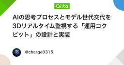
AIの思考プロセスとモデル世代交代を3Dリアルタイム監視する「運用コクピット」の設計と実装
機械学習タグが付けられた新着記事 - Qiita
はじめにバックグラウンドで並行稼働する複数の機械学習モデルが、市場データを読み込み、判断を下し、日々モデル同士で戦って世代交代していく様子――。「映画のミッションコントロール（管制室）」のように3Dでリアルタイムに眺められたら、日々の開発と運用のモチベーションはどうなるでしょうか。日本株のAI銘柄スクリーニング＆継続学習端末「ALPHA FORGE（アルファフォージ）」を個人で開発・運用しています。バックエンド（FastAPI / Celery）では4種類のMLモデル（XGBoost, Random Forest, LSTM, Transformer）が日々推論と学習を回し、Obsidianには4,800本以上の企業分析ノートが蓄積されています。普段は「未来データのリークを構造で防ぐ設計」や「プロンプトインジェクションの防御」といった泥臭いパイプライン構築と戦っていますが、今回はちょっと息抜きを兼ねて、暗い部屋のサブモニターに常時映しておける専用コクピット「Ops Console（オプス・コンソール）」を開発しました。本記事では、本体に負荷をかけない完全分離アーキテクチャから、Thre
8日前